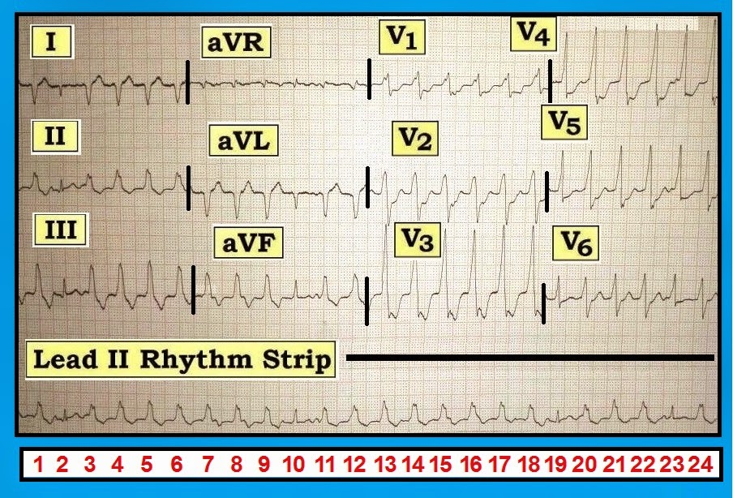
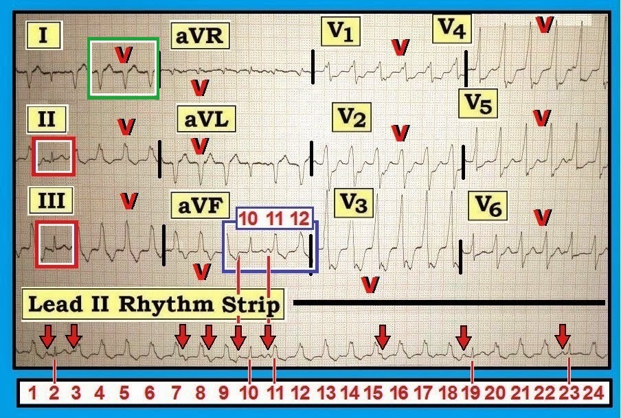
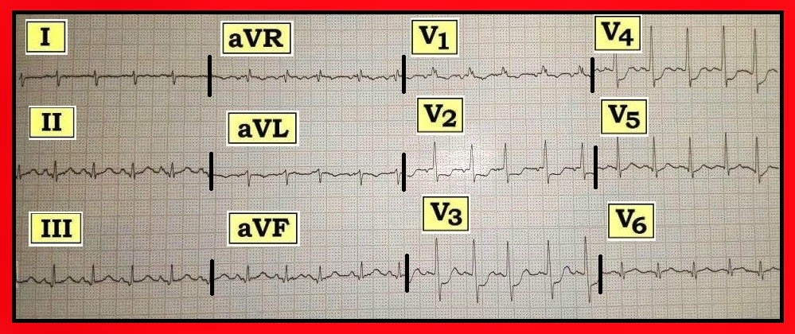
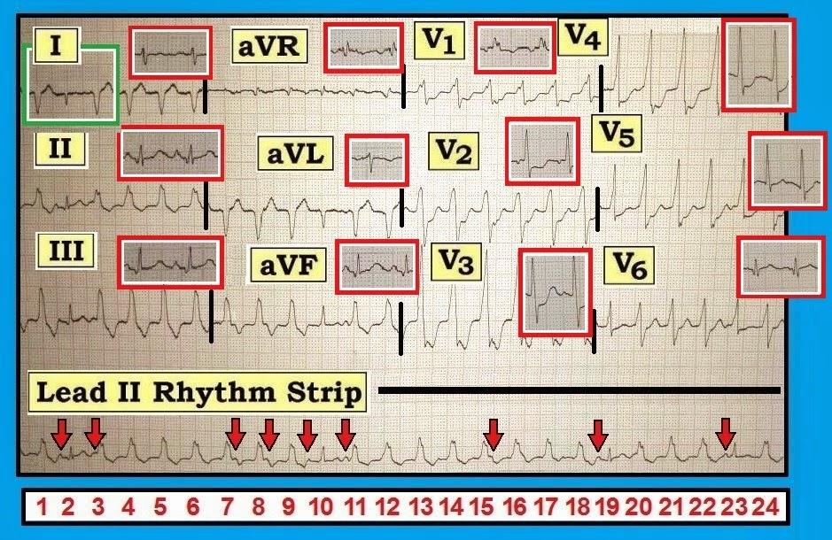

ECG Blog #102 – Nhịp nhanh QRS rộng kèm đau ngực (Phần bổ sung cho Video-7)
HÃY LƯU Ý: Đây là một bài điện tâm đồ rất nâng cao, bổ sung cho ECG Video-7 của tôi. Những khái niệm thiết yếu cần nắm vững đã được trình bày trong Video. Nhưng với những ai muốn tìm hiểu thêm — hy vọng bài này sẽ đưa việc đánh giá ca bệnh hấp dẫn này lên một tầm mới! Rất hoan nghênh phản hồi và bình luận của các bạn!
--------------------------------
Trong ECG Blog #101 ( = ECG Video-7) — Chúng tôi đã trình bày ca bệnh một phụ nữ 70 tuổi bị đau ngực mới khởi phát và nhịp nhanh QRS rộng (WCT) (Wide-Complex Tachycardia) thấy trên điện tâm đồ ở Hình 1. Chúng tôi đã đặt ra các câu hỏi sau:
- Nhịp trên chuyển đạo II dài ở Hình 1 là nhịp gì?
- Đây có phải là VT không? Nếu bạn nghĩ là phải — Bạn chắc chắn đến mức nào về chẩn đoán của mình?
Phần Trả lời dạng hoạt hình cho các câu hỏi này đã được trình bày chi tiết trong ECG Video-7 của chúng tôi.
- Mục đích của ECG Blog #102 tiếp nối này — là bàn về điểm mà một người theo dõi blog (Алексей Рукин) đã nêu ra — liên quan đến giá trị của việc so sánh tỉ mỉ bản ghi WCT ở Hình 1 với điện tâm đồ sau chuyển nhịp.
--------------------------------
Lời cảm ơn: Xin cảm ơn BS. Sa’ad Lahri (Cape Town, Nam Phi) — đã cung cấp cho tôi ca bệnh và các bản ghi cho ECG Blog #101, 102.
--------------------------------


Bàn luận về Hình 1: Tóm tắt ECG Video-7
Mặc dù người phụ nữ 70 tuổi trong ca này có huyết động ổn định vào thời điểm ghi bản ghi ở Hình 1 — bà đang bị đau ngực. Vì vậy — cần đưa ra quyết định nhanh chóng về việc có chỉ định sốc điện chuyển nhịp ngay lập tức hay không.
- Ban đầu không cần đưa ra chẩn đoán nhịp xác định. Thay vào đó — các nhân viên cấp cứu trong ca này đã nhanh chóng nhận ra từ dải nhịp chuyển đạo II dài rằng nhịp chiếm ưu thế là một WCT đều không có sóng P xoang bình thường. Xác suất thống kê để nhịp này là VT (nhịp nhanh thất — Ventricular Tachycardia) — ít nhất là 90%. Ở một phụ nữ 70 tuổi có đau ngực mới xuất hiện — quyết định phù hợp là sốc điện chuyển nhịp ngay lập tức. Kết quả là chuyển về nhịp xoang (như chúng ta sẽ thấy ngay sau đây trên bản ghi sau chuyển nhịp ở Hình 3).
- ĐIỂM THEN CHỐT (PEARL): Với bệnh sử nêu trên và điện tâm đồ ở Hình 1, tổng thời gian để đi đến quyết định sốc điện chuyển nhịp ngay lập tức cho bệnh nhân này không nên quá vài giây …
Một trong những điểm chính được nhấn mạnh trong ECG Video-7 — là sự hiện diện của một số manh mối bổ sung ở Hình 1 làm tăng khả năng nhịp này là VT lên gần như 100%.
- Bạn cứ thoải mái xem lại Hình 1 một lần nữa để xem mình nhận ra được bao nhiêu manh mối trong số này. Câu trả lời của chúng tôi ở ngay bên dưới — được minh hoạ trên Hình 2 đã đánh dấu.


Bàn luận về Hình 2: Bằng chứng cho thấy nhịp này đúng là VT
Như đã nhấn mạnh trong ECG Video-7 — hoạt động nhĩ có hiện diện (ít nhất là trong một phần thời gian) trên dải nhịp chuyển đạo II dài. Các mũi tên ĐỎ đánh dấu những sóng P xoang mà chúng ta thấy được. Dù tần số nhanh, QRS giãn rộng và bất thường ST-T khiến ta không thể dò theo sóng P suốt toàn bộ dải nhịp chuyển đạo II dài này — tính đều đặn của những sóng P mà ta thấy được (mũi tên đỏ) — gợi ý rằng có một nhịp xoang nền với tần số ~130/phút.
- Trong số những manh mối hữu ích nhất để khẳng định một nhịp nhanh QRS rộng là VT — là sự hiện diện của một hoặc nhiều trong 3 dấu hiệu điện tâm đồ có liên quan với nhau. Đó là: i) Phân ly nhĩ thất (AV dissociation); ii) Nhát bắt được (capture beat); và iii) Nhát hỗn hợp (fusion beat). Cả 3 dấu hiệu điện tâm đồ này đều có mặt ở Hình 2 — điều này chứng minh nhịp này là VT.
- Phân ly Nhĩ thất có mặt ở Hình 2 — vì có một nhịp xoang nền (được gợi ý bởi các mũi tên đỏ) không liên quan đến nhịp nhanh QRS rộng (tức là, các sóng P = [mũi tên đỏ] đứng trước nhát #3 và đứng sau các nhát #7,8,15 không được dẫn truyền).
- Phức bộ QRS hẹp ở các nhát #2, 10, 19 và 23. Mỗi nhát này đều có một sóng P xoang đứng trước. Vì vậy — các nhát #2,10,19,23 đều là Nhát Bắt được (trong đó một sóng P xoang xuất hiện đúng vào thời điểm thích hợp trong chu kỳ để đi qua được nút AV và “bắt” (capture) các thất).
- Nhát #11 là một Nhát Hỗn hợp. Chúng ta nhận ra điều này vì hình dạng cả QRS lẫn sóng T của nhát #11 đều trung gian giữa các nhát dẫn truyền từ xoang (như nhát #10) và các nhát thất (như nhát #12). Việc nhát #11 là nhát hỗn hợp có lẽ thấy rõ nhất trong hình chữ nhật XANH DƯƠNG ở chuyển đạo aVF. (NẾU nhát #10 và nhát #12 “có con” — thì đứa con có thể được dự đoán sẽ trông giống nhát #11, vốn đại diện cho sự “hỗn hợp” giữa hình dạng của nhát #10 và #12).
ĐIỂM MẤU CHỐT: — Đánh giá Hình dạng QRS và xác định Trục trong cơn nhịp nhanh là 2 đặc điểm bổ sung giúp khẳng định (gần như chắc chắn) rằng nhịp này là VT. Để thuận tiện cho việc đánh giá hình dạng QRS ở từng chuyển đạo trong 12 chuyển đạo của bản ghi này — Chúng tôi đã đặt một chữ “V” phía trên những nhát là nhát thất ở mỗi chuyển đạo.
- Hãy lưu ý việc ghi đồng thời một dải nhịp chuyển đạo II dài bên dưới điện tâm đồ 12 chuyển đạo giúp xác định dễ dàng hơn những nhát nào được dẫn truyền từ xoang (tức là, các nhát bắt được) — và những nhát nào là nhát thất ( = nhiều loạt ngắn NSVT = nhịp nhanh thất không bền bỉ — NonSustained VT).
- Sự hiện diện của trục lệch cực độ (tức là, thấy QRS âm hoàn toàn ở chuyển đạo I hoặc chuyển đạo aVF) hiếm gặp với các nhịp trên thất. Do đó, riêng phức bộ QRS âm hoàn toàn trong hình chữ nhật XANH LÁ ở chuyển đạo I của Hình 2 đã gần như chứng minh nhịp này là VT.
Về Hình dạng QRS: 3 chuyển đạo MẤU CHỐT để đánh giá sự có mặt và loại BBB (blốc nhánh — Bundle Branch Block) là các chuyển đạo I, V1 và V6. Dẫn truyền lệch hướng hầu như luôn biểu hiện hình dạng QRS phù hợp với một dạng rối loạn dẫn truyền nào đó (tức là, RBBB kèm hoặc không kèm blốc phân nhánh; hoặc LBBB). Vì vậy — hình dạng QRS không phù hợp với bất kỳ loại rối loạn dẫn truyền nào khiến dẫn truyền lệch hướng hoặc BBB có sẵn từ trước trở nên ít khả năng hơn (dù không loại trừ hoàn toàn).
- Ở Hình 2 — sóng S tận rộng ở chuyển đạo V6 phù hợp với RBBB. Tuy nhiên, sóng R rộng và không rõ hình dạng ở chuyển đạo V1, kết thúc bằng một sóng S chứ không phải R’, hoàn toàn không gợi ý RBBB — và, QRS âm hoàn toàn ở chuyển đạo I không giống bất kỳ dạng BBB nào. Do đó, hình dạng QRS gợi ý mạnh nhịp này là VT.
Một Lý do gây VT? Manh mối cuối cùng cho thấy nhịp này là VT nằm trong các hình chữ nhật ĐỎ ở các chuyển đạo II và III của Hình 2. Hãy lưu ý các sóng q nhỏ kín đáo nhưng có thật và gợi ý ST chênh lên tối cấp (đặc biệt ở chuyển đạo II) ở người phụ nữ 70 tuổi này, người đến viện vì đau ngực mới khởi phát.
- Như sau đó đã được xác nhận khi thông tim — bệnh nhân này bị tắc cấp một động mạch LCx (động mạch mũ trái) ưu thế — vì vậy, STEMI (nhồi máu cơ tim có ST chênh lên — ST Elevation Myocardial Infarction) thành dưới cấp của bà rõ ràng là một “lý do” gây ra các cơn NSVT.
- Mặc dù các phức bộ QRS ở các chuyển đạo V1,V2 của Hình 2 là nhát thất — hình dạng của ST chênh xuống ở các chuyển đạo này gợi ý tổn thương cấp thành sau, phù hợp với các kết quả thông tim này.
Đánh giá Bản ghi Sau Chuyển nhịp: Ta học được gì?
Như đã đề cập ở trên — bệnh nhân này đã được sốc điện chuyển nhịp kịp thời — kết quả là chuyển về nhịp xoang, như thấy trên điện tâm đồ sau chuyển nhịp (ở Hình 3).
- Ta học được gì từ bản ghi sau chuyển nhịp?


Bàn luận về Hình 3: Bản ghi sau chuyển nhịp
Bản ghi sau chuyển nhịp cho thấy nhịp xoang đã được phục hồi (sóng P dương, được dẫn truyền ở chuyển đạo II với tần số nhanh 115-120/phút). Chúng tôi ghi nhận một số dấu hiệu kín đáo:
- Có RAD (trục lệch phải — Right Axis Deviation) — với phức bộ QRS dạng rS, âm là chủ yếu ở chuyển đạo I. Điều này có thể phản ánh LPHB (blốc phân nhánh trái sau — Left Posterior HemiBlock) — đặc biệt nếu đây là dấu hiệu mới ở người phụ nữ 70 tuổi được phát hiện tắc cấp LCx này.
- Có IRBBB ( = RBBB không hoàn toàn) — do sóng R chiếm ưu thế ở chuyển đạo V1 cộng với sóng s tận hẹp ở các chuyển đạo I,V6 — nhưng không có QRS giãn rộng.
- ST chênh lên mà ta thấy ở các chuyển đạo II,III ở Hình 2 dường như đã hết. Các sóng q nhỏ ở thành dưới vẫn tồn tại.
- ST chênh xuống khu trú (ở các chuyển đạo V2,V3,V4) vẫn tồn tại, cùng với các sóng R ở thành trước cao không tương xứng. Điều này phù hợp với tổn thương cấp thành sau.
- Có các sóng q nhỏ chưa rõ ý nghĩa ở các chuyển đạo V5,V6 (sóng q vách — hay sóng q nhồi máu do tắc cấp LCx?).
- Dường như có ST chênh lên nhẹ nhưng có thật ở chuyển đạo V6 (đặc biệt khi so với chuyển đạo V5, nơi nếu có thì là ST chênh xuống nhẹ). Như vậy, tổng hợp các dấu hiệu điện tâm đồ từ các nhát bắt được ở Hình 2 cộng với phân tích bản ghi sau chuyển nhịp ở Hình 3 đều phù hợp với STEMI cấp thành dưới-sau-bên (được xác nhận bằng kết quả thông tim là tắc cấp LCx ưu thế) — đã gây ra các loạt NSVT.


Bàn luận về Hình 4: So sánh VT với điện tâm đồ sau chuyển nhịp
Vì bệnh nhân này đã được điều trị thành công — Chúng ta có được điều kiện thuận lợi để phân tích kỹ điện tâm đồ ban đầu ( = Hình 1) của bà bằng cách so sánh trực tiếp với bản ghi sau chuyển nhịp (Hình 3). Chúng tôi thực hiện điều này ở Hình 4 — trong đó hình dạng QRS sau khi chuyển về nhịp xoang được hiển thị trong các hình chữ nhật ĐỎ ở từng chuyển đạo trong 12 chuyển đạo.
- Việc so sánh từng chuyển đạo một như vậy gợi ý một phát hiện thú vị — đó là tất cả các phức bộ hẹp trên bản ghi này có lẽ đều là hỗn hợp ở một mức độ nhẹ nào đó, chứ không phải là các nhát “bắt được” thuần tuý. Vì vậy — thay vì là một chuỗi các loạt NSVT ngắn — chúng tôi rất nghi ngờ có VT liên tục suốt toàn bộ dải nhịp chuyển đạo II dài ở Hình 1!
- Hãy lưu ý phức bộ ở giữa trong hình chữ nhật XANH LÁ ở chuyển đạo I của Hình 4. Phức bộ giữa này hẹp và âm hoàn toàn. Hình dạng của nó đúng như những gì ta dự đoán sẽ thấy nếu phức bộ rS xoang sau chuyển nhịp ở chuyển đạo I (trong hình chữ nhật ĐỎ) xảy ra cùng lúc với nhát VT dạng QS âm hoàn toàn. Hợp lý hơn nhiều khi cho rằng QRS hẹp âm hoàn toàn trong hình chữ nhật XANH LÁ ở chuyển đạo I là một nhát hỗn hợp — vì rất hiếm khi nhát xoang biểu hiện QRS âm hoàn toàn ở chuyển đạo I. Ngược lại — phức bộ rS âm là chủ yếu ở chuyển đạo I của bản ghi sau chuyển nhịp hoàn toàn phù hợp với hình ảnh LPHB, điều hoàn toàn không bất ngờ khi có tắc cấp một động mạch LCx ưu thế.
- Tương tự — có những khác biệt kín đáo khác về hình dạng trong và sau VT ở các chuyển đạo khác, gợi ý rằng tất cả các nhát hẹp ở Hình 1 có lẽ đều là phức bộ hỗn hợp (tức là, mất sóng r nhỏ ban đầu ở chuyển đạo aVL trong VT ở nhát #10 — và mất sóng q nhỏ ban đầu ở chuyển đạo V6 trong VT ở nhát #23).
--------------------------------
- BẤM VÀO ĐÂY — để tải về bài ôn tập dạng pdf về đánh giá nhịp nhanh QRS rộng đều (trích từ ACLS-2013-ePub của tôi). Bài có bàn luận chi tiết về hình dạng QRS, trục trong cơn nhịp nhanh và các tiêu chuẩn phân biệt khác.
--------------------------------------------------------------